Bridging the gap between business decision-makers, developers, designers, and users through strategic visual architecture.
Scroll
What I Do
System Level Thinking
Converting complex business logic into intuitive, navigable paths for the user.
Design Leadership
A strategic link between business decision-makers and developers, ensuring visual architecture aligns with functional needs.
Design Engineer
Architecting workflows that integrate AI tooling into the core of the product lifecycle.
Recent Project
Dell Virtual Assistant for Product Configuration
Redesigning the solution orchestration layer for enterprise IT infrastructure — reframing the problem from "improving usability" to restoring trust and confidence under time constraints. The result: a unified workspace that reduced cognitive load, minimized errors, and improved sales efficiency.
Selected Work
Case Studies
Enterprise rigor meets brand emotion. A look at how I untangle complex systems and rebuild trust at scale.
Enterprise TransformationFeatured Case Study
Restoring Trust in a Mission-Critical Sales System
A unified, AI-guided configuration workspace that reduced cognitive load, minimized errors, and rebuilt confidence under deadline pressure.
+11%
CSAT — Trust Restored
18%
Faster Configuration
View Case Study2021—26
Brand & E-Commerce
Monster Energy
Customer-facing commerce and internal sales tooling that balanced bold brand expression with intuitive, measurable interaction design.
View Case Study2016—20
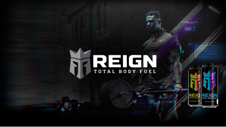
Product Launch
Reign Total Body Fuel
A high-energy digital identity and product experience built to introduce Reign to a performance-driven audience at scale.
View Case Study2019
Profile
UX / Product Designer. Systems Thinker. Trust Builder.
I specialize in untangling complex enterprise data and transforming it into intuitive, scalable product ecosystems. While I’ve spent recent years architecting intelligent workflows at Dell, my true passion lies in the intersection of deep technical constraints and elegant, user-centric interfaces. I am a firm believer in the power of robust design systems, data-driven design, and cross-functional harmony — yes, designers and engineers can actually be best friends.
Based in Los Angeles, CA
Recent Achievements
$1.2M
Estimated annual operational savings for early-adopter clients.
+11%
Increase in CSAT — trust restored through usability & reliability.
35%
Reduction in configuration errors via intelligent automation.
18%
Faster time-on-task configuring complex IT solutions.
Core Expertise
Enterprise Platform Design (AI-Guided)
Deconstructing complex workflows into manageable, intuitive interfaces for global-scale applications — transforming traditional configuration into intelligent, AI-guided experiences that feel trustworthy.
UX Research & Synthesis
Deep-dive qualitative research that translates into data-driven design solutions, actionable product strategy, and clear design roadmaps.
Cross-Functional Leadership
Partnering with Product and Engineering leadership to shape roadmap and platform strategy, aligning user needs with technical and business constraints.
Design System Architecture
Building and maintaining robust, multi-platform components, scalable pattern libraries, and comprehensive design systems that accelerate development efficiency.
Led design strategy for AI-powered configuration and transactional workflows, enabling enterprise users to move from product selection to validated purchase decisions with greater accuracy and confidence.
2021 — 2026
2019 — 2020
Senior Staff UX/UI Designer
Monster Energy
Directed the digital brand experience for product e-commerce platforms and internal sales tools, diplomatically aligning marketing, sales, and engineering initiatives toward customer-centered outcomes.
Staff UX/UI Designer
Monster Energy
Designed and shipped customer-facing digital experiences across multiple brand families, balancing visual design with intuitive interaction patterns to drive measurable user engagement and brand stickiness.
Dell Technologies: Restoring Trust in a Mission-Critical Sales System
Role
Lead Product Designer
Timeline
8 Months
Deliverables
Solution Dashboard, AI-Guided Order Management System
Summary
Dell sales agents configure complex IT infrastructure under tight deadlines, where errors directly impact revenue and customer trust. Over time the legacy sales ecosystem became fragmented, dense, and reactive — eroding confidence and stalling CSAT at 72%. I led the end-to-end redesign of the configuration experience, reframing the problem from "improving usability" to restoring trust and confidence under time constraints.
The Next-Gen IT Product Configurator
Unified product configurator with an AI collaboration assistant.
18%
Faster
Decrease in time spent configuring complex server solutions across IT infrastructure.
+11%
Restored Trust
Increase in CSAT score — trust restored through improved usability and reliability.
The Problem: Erosion of Trust
Sales agents relied on fragmented legacy tools to configure complex solutions, forcing constant context switching and reactive error handling.
In high-stakes environments, this friction eroded trust in the system’s ability to produce viable outcomes. As confidence declined, users turned to manual workarounds and personal validation, increasing inefficiency and risk. With CSAT stalled at 72%, it became clear the problem extended beyond usability to systemic trust.
Process
Discovery: Understanding Confidence Under Pressure
Rather than auditing screens in isolation, I focused on how agents actually worked.
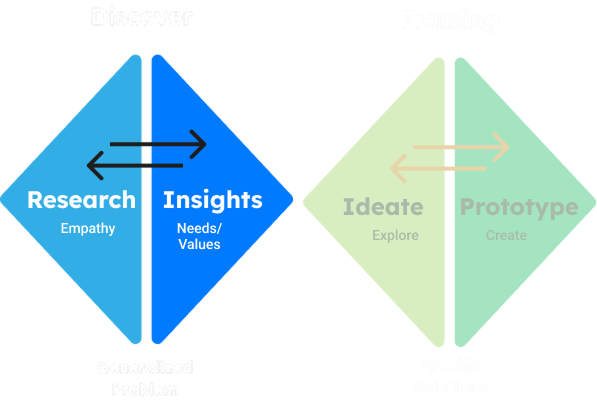
Pain Points
The issue wasn’t just about usability (the assumed problem). It was confidence, due to:
Reactive Error Handling
Late Validation
Errors surfaced late and required manual resolution — often 10–15 minutes per issue.
Data Paralysis
High Density
Information density was high, but actionable insight was dangerously low.
Fragmented Workflow
Tool Switching
Agents switched across platforms to complete a single configuration, increasing risk of data loss and fatigue.
“I know how to work around the errors and get them fixed, because I’ve done it so many times. But for new sales users, the learning curve is steep.”
— Dell Sales Partner, Fortune 500 Client
Cognitive Load
Our Cognitive Load Index (CLI) ranges 1–100; scores above 75 indicate excessive mental strain. The legacy experience scored 87.4. By simplifying decision paths and aligning interactions with real workflows, we drove it down to 54.4 — a 37% reduction, moving from the frustration zone into the productive range.
87.4
CLI · Legacy
76.8
CLI · Configurator v1
54.4
CLI · After Redesign
37% reduction in cognitive load — from frustration zone (84+) to productive range (54).
Attention Fragmentation
Heat maps showed user gaze spreading uniformly across pages — no clear focal hierarchy guiding next actions.
Decision Fatigue
Users encountered an average of 47 decision points per configuration session, most of which were unnecessary.
Error Recovery Cost
Resolving a single validation error required users to scroll away from their context, breaking flow and compounding confusion.
18% Time-on-Task Reduction
Post-redesign usability sessions showed measurable improvement in task completion speed and first-attempt success rate.
Contextual Interviews & Service Mapping
Through job shadowing, I conducted in-context observational research to understand how Dell agents and partners work in real-world conditions. Insights from these sessions were synthesized into a living research artifact that mapped pain points, behaviors, and unmet needs — helping product and engineering teams stay grounded in user reality as design and development evolved.
Observation: Configuration Pains
Discoverability
Dense information, unclear hierarchy, and competing signals overwhelm users while browsing the product catalog, making it difficult to form mental models.
Navigation
Product catalog selection lacks clear entry points and progressive disclosure, forcing users to rely on trial-and-error rather than confident navigation.
Redundancy
Users are required to repeat the same actions across steps, increasing friction, fatigue, and the likelihood of mistakes.
Service Blueprint: A Fragmented Configure Step
Mapping the configure journey across both app tracks exposed why confidence eroded — users pass through a dense chain of overlapping configurators and integrations, several flagged as friction points, long before a quote is ever produced.
Configure-step service blueprint — fragmented tooling across the seller and customer tracks. Scroll to explore →
Value Stream Mapping
By producing a value stream map I was able to visualize an end-to-end overview of the complex workflows, enabling teams and stakeholders to identify non-value-added time (waste), reduce bottlenecks, and speed up delivery. By mapping current and future states, VSM enhances collaboration across departments, improves process efficiency, and fosters a data-driven culture of continuous improvement.
Most time-consuming actions:
Component selection
System Performance
Unclear Error Resolution
User Collaboration
Context switching between various tools
Number of Validation errors to resolve
Detours
Here is an example of how validation errors can affect users’ time on task which translates to lost sales.
Example Problem
“When configuring complex IT infrastructure solutions, compounding capability issues and unclear error resolution slows me down.”
To solve this the user must scroll to view errors, which takes focus away from configuration. Then try to make sense of the error and resolve with personal product knowledge or raise a support ticket. This back and forth viewing errors and making the correct selections can take an average of 10–15 min.
10min
Time on Task
What appears to be a minor task is repeated 10–20 times daily, across dozens of quotes and multiple sales representatives, scaling into significant productivity loss and hours of avoidable operational overhead for even small changes.
10–20×
Daily Repetitions
1,000+
Sales Reps Affected
$26K
Daily Cost Estimate
Number of Users
Number of Iterations
Cost to Dell*
1
1
$1.34 USD
1
20
$26.81 USD
1,000
20
$26,808 USD
$148.94 / second
A Strategic Reframe: The Unified Solution
Originally positioned as a next-generation configurator redesign, research reframed the opportunity: design a unified, intelligent workspace that supports confident decision-making in complex, high-pressure environments. This shifted focus from interface cleanup to workflow orchestration, error prevention, and system transparency.
Prototype walkthrough of the unified configurator.
01
Unified Product Configurator
A single experience for exploring, comparing, and configuring products and services — with proactive error prevention and intelligent guidance.
02
Intelligent Automation
An AI-powered collaboration assistant providing real-time, contextual guidance and automating routine tasks — preventing errors before they occur.
Real-World Impact
35%
Fewer Errors
Reduction in technical sales support tickets related to configuration errors, using intelligent automation.
$1.2M
Annual Savings
Estimated operational cost savings for early-adopter clients.
+11%
CSAT Increase
Elimination of configuration-related complaints and improved user satisfaction.
Lessons Learned
Visualizing Complexity as Clarity
Managing enterprise infrastructure isn’t about hiding complexity, but organizing it. Shifting from manual validation to AI-guided intelligence lets users focus on intent.
The Value of Embedded Design
The research phase proved that "designing for" differs from "designing with." Witnessing partners’ incompatibility issues gave insight no survey could capture.
Incremental Evolution vs. Total Refactor
Enterprise sales tools operate within complex ecosystems — front-end decisions must align tightly with backend constraints and data integrity.
Next Project
Monster Energy
Monster Energy
Athlete Development Mobile App
UNLEASH THE BEAST
Role
Product Designer
Timeline
6 Months
Deliverables
Web Application
Team
Designer, 2 engineers, Digital Marketing Manager
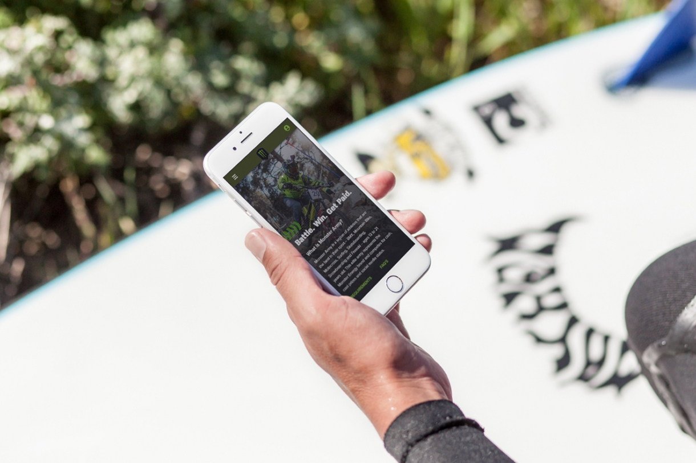
Overview
Brand Loyalty Crisis
Monster Army is Monster Energy's elite action sports program — a global network of athletes ages 13–21 competing in BMX, Mountain Biking, Motocross, Surfing, Skateboarding, and Freeski. The program promises cash prizes, gear sponsorship, and competitive exposure. Athlete signups had been declining ~15% year-over-year and first-year retention was eroding. The app — the primary touchpoint between Monster and its athletes — was failing at its one job: making athletes feel valued and supported.
Payout delays destroying trust
Athletes won races and waited 4–6 weeks with zero visibility. The claim process was email-based and manual. No status. No confirmation. Just silence.
Fragmented Information Architecture
Core actions — applying to events, submitting results, claiming prizes — required 7+ taps to reach. First-time athletes had no clear next step after signing up.
Desktop-first on a mobile-first audience
Most athletes used the app at events: outdoors, under glare, wearing gear, under time pressure. The interface was built for a desk, not a skate park.
Design Challenge
How do you rebuild athlete trust through product design when the trust gap is both operational (slow payouts) and experiential (confusing UX) — and you can't change the payout operations?
Design Process
Discover. Define. Design. Validate.
I started with support ticket analysis and drop-off data, then ran contextual sessions with 8 athletes across 3 sports — observing how they used the app in the field: parking lots, event venues, training facilities.
Key Insight
Athletes interact with this app in 3 contexts: pre-event prep, live-at-event, and post-event admin. The existing design treated all three identically. Most confusion happened at post-event admin — the moments when athletes needed to claim prizes and submit results. That's where the redesign had to win.
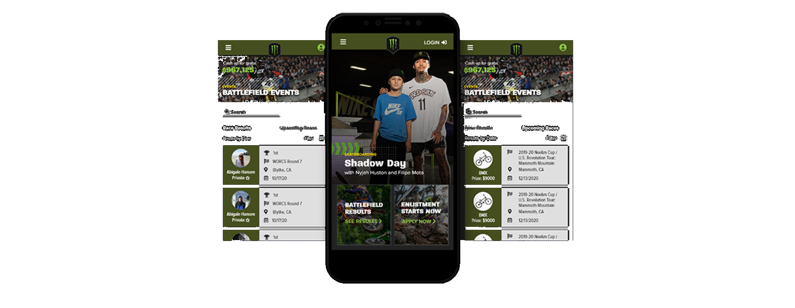
Pre-event, live-at-event, and post-event surfaces — each tuned to its moment.
CALL TO ACTION
Surface what matters, now.
The home feed was redesigned around urgency. Battlefield event results, upcoming races, and prize totals were surfaced first. Athletes shouldn't have to search for a reason to open the app.
Live Battlefield Events Feed
Real-time race results and upcoming events ranked by prize value. Athletes see what's at stake before they even open a screen.
$967,125 Live Prize Counter
A persistent prize total created ambient urgency — a daily reminder of what competing was worth.
Outcome
Enlistment entry points embedded in the feed drove new signups organically from within the existing user base — no separate marketing push needed.
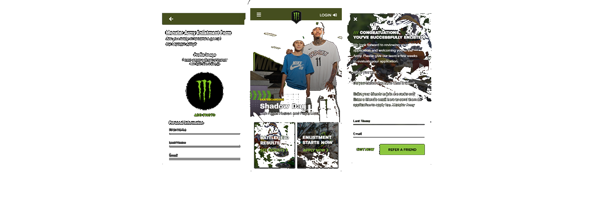
Enlistment surfaced inside the feed — discovery through context.
ENLISTMENT PROCESS
Form Optimization
The original sign-up form asked for everything upfront. I reduced it to the minimum viable set — name, sport, photo, submit — and moved everything else to post-acceptance profile completion. A completed signup converts; a half-finished one disappears.
Minimum viable enlistment
4 fields. Under 2 minutes. Completion rate was the metric that mattered most at the top of the funnel.
Referral loop at confirmation
Post-submission confirmation immediately prompts athletes to refer friends — turning every signup into a growth event.
Feed-embedded CTA
"Enlistment Starts Now" lived inside the battlefield feed — discovery through context, not a separate marketing page.
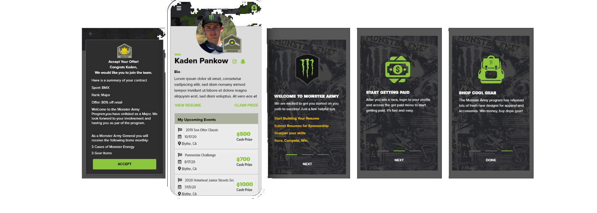
A standardized card system carried the athlete through onboarding.
ONBOARDING
Clear next steps from day one.
Accepted athletes had no clear path forward. The redesigned onboarding sequence surfaced three core actions — build your resume, get paid, shop gear — immediately after offer acceptance.
One-tap offer acceptance
Contract details — rank, sport, offer %, monthly allotments — surfaced clearly. No ambiguity, no email follow-up needed.
3-card welcome sequence
Each card surfaced one primary action. Not an overwhelming list of features — three clear starting points and nothing else.
Result: 3× faster time-to-first-event
Athletes went from acceptance to competing within 72 hours, vs. a previous 3-week average.
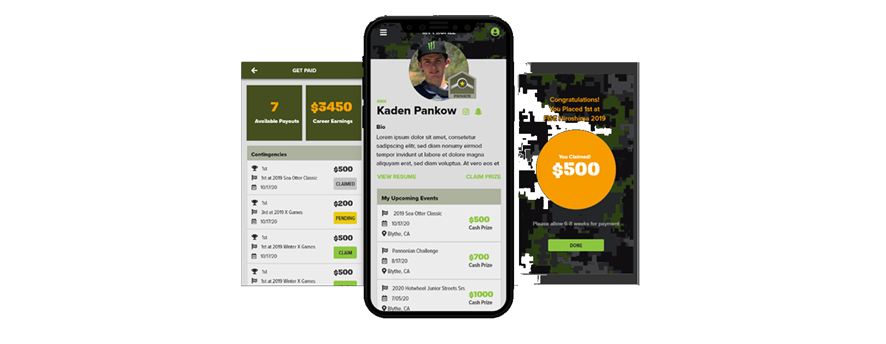
Earnings, profile, and a visible, tracked reward — the post-event surfaces.
CLAIM MANAGEMENT
Replace anxiety with visibility.
The biggest trust problem wasn't just payout speed — it was the silence. Athletes didn't know what was pending, claimed, or earned. The redesign replaced email chaos with a real-time earnings dashboard.
Real-time earnings dashboard
Available payouts, career earnings, and per-event claim status at a glance. Transparency as a trust mechanism.
One-tap claim
Originally 3 confirmation steps. Reduced to a single tap with immediate confirmation state — validated through two rounds of usability testing.
Prize celebration state
Full-screen win confirmation — brand-consistent, visceral, shareable. Made Monster feel like it was celebrating with the athlete, not just processing a transaction.
Validate
Tested high-fidelity prototypes with 6 athletes over 2 rounds. Key iterations: the claim flow was reduced from 3 confirmation steps to 1 based on usability observation. The enlistment form was cut from 12 fields to 4 after watching athletes abandon mid-flow. Both changes were driven by behavior, not assumption.
Decisions
Constraints & Tradeoffs
What I worked within — and what I consciously gave up.
Design Constraints
Field-use mobile environment
Athletes use this app at race venues, training parks, and staging areas — outdoors, one hand, gear on. Every critical interaction had to be completable in under 3 taps.
Legal compliance embedded in UI
Athlete contracts, offer acceptance, and prize claims all had legal requirements that had to live in-product — not offloaded to email. This required close collaboration with legal and constrained the offer acceptance flow significantly.
Monster brand system lock-in
The visual identity — claw green, dark backgrounds, aggressive type — was non-negotiable. Every layout decision had to work within a tightly defined brand design system.
Global audience, ages 13–21
Athletes across 45 countries, middle schoolers to young adults. Copy had to be plain, actions self-evident, and the experience resilient to low-connectivity environments.
Design Trade-offs
Profile completeness vs. Speed
Reducing enlistment from 12 fields to 4 improved completion rate but meant managers had to collect remaining info post-signup. A completed signup converts — a half-finished one disappears.
Rich animation vs. Performance
Removed complex micro-animations from the home feed in favor of static transitions. Event cards load faster and the feed feels snappier in low-connectivity race environments where athletes actually use it.
Feature depth vs. Time-to-value
Deprioritized social and community features entirely in favor of the Get Paid flow. The trust problem was financial — fixing financial visibility had to come before community building.
Custom patterns vs. Native patterns
Used platform-native UI components instead of custom controls. Slightly less branded but dramatically more learnable for a young, global user base encountering the app for the first time.
Impact
MISSION ACCOMPLISHED.
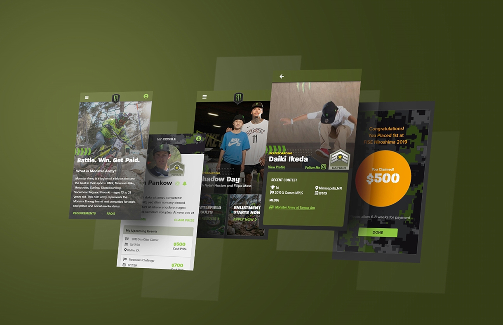
92%
Prize claim rate
35%
YoY signup growth
72h
Avg. payout time
3×
Faster time-to-first-event
“The new system didn't just change how we track athletes — it changed how we communicate with them. It's built for speed, just like us.”
— Marcus Thorne, Global Director of Sports Marketing, Monster Energy
Retrospective
What I Learned
Trust is a product problem
I couldn't fix the payout timeline — that was ops. But I could make the uncertainty visible. Adding status transparency to the claim flow reduced anxiety even when the payout speed didn't change. Visibility is a form of trust.
Design for the environment, not the persona
"13–21 action sports athlete" is too broad to design for. Designing for the specific context — outdoor, at-event, high pressure, one hand — was far more useful than demographic assumptions. Where you use something shapes how you use it.
Legal constraints can improve UX
Embedding contract acceptance into the onboarding flow required close collaboration with legal. The constraint forced clearer copy and a simpler flow. The most constrained part of the product ended up being one of the most polished.
Validate your assumptions about "fast"
I assumed athletes wanted a fast onboarding flow. What they actually wanted was a fast path to competing. Onboarding length mattered less than clarity about what came next. The assumption was adjacent to the insight — but not the same thing.
Research revealed that modern consumers prioritize functional purity over flashy marketing. We focused on transparency, technical precision, and high-contrast accessibility.
Gen Z Athletes+
Primary Demographic
The core demographic seeking authenticity and clean labels.
60NPS
Net Promoter Score
Consistent brand look & feel. Alignment of in-store promo graphics, social media, and YouTube content.
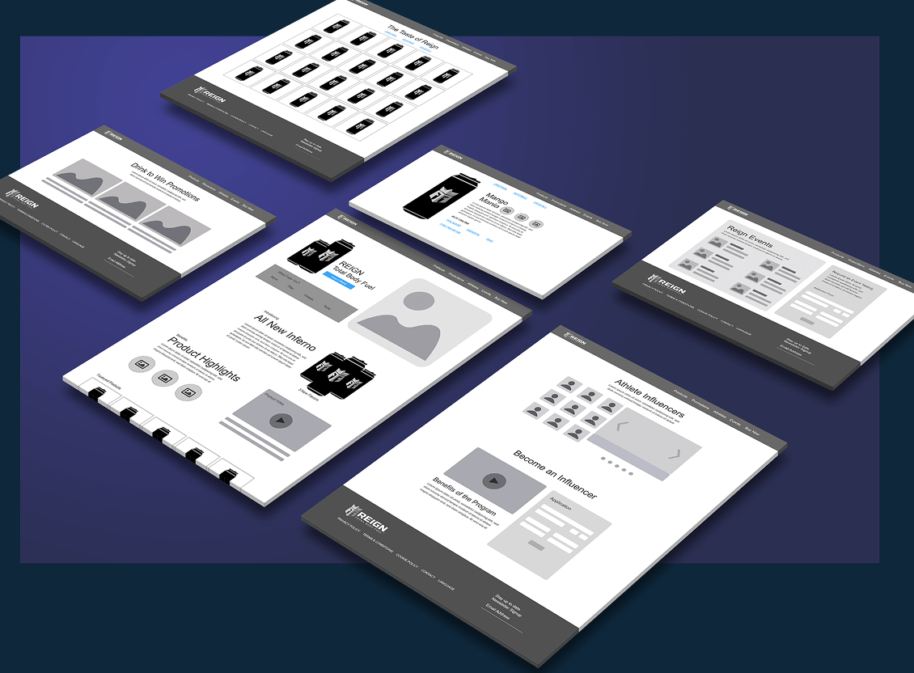
Early wireframes — mapping information architecture, content hierarchy, and the e-commerce flow before any visual design.
Key Insights
Design Considerations
For this new product launch there were careful design decisions to consider. The upside was that the organization had other products within the sport-fitness category, giving them the necessary insights to understand the target users. We were able to set expectations based on consumer insights.
Health Conscious
Health-conscious users prioritize what they consume, making clear nutrition facts and product benefits essential — core drivers of site engagement.
Product Education
Alongside product education, enabling seamless purchase and product discovery (via retailers like Walmart and Amazon) was critical to driving conversion.
Key Insight
Competitive insights informed a more dynamic experience, leveraging influencer content and interactive product exploration to increase engagement.
Solution
High Fidelity Artifacts
High-fidelity design was where the experience truly came to life. Through refined visual systems, responsive layouts, and intentional interaction patterns, I translated strategy into a cohesive, immersive brand experience. Designing directly in the browser let me shape the nuances of motion, hierarchy, and responsiveness in real time — ensuring the final product wasn’t just visually strong, but felt seamless and alive across devices.
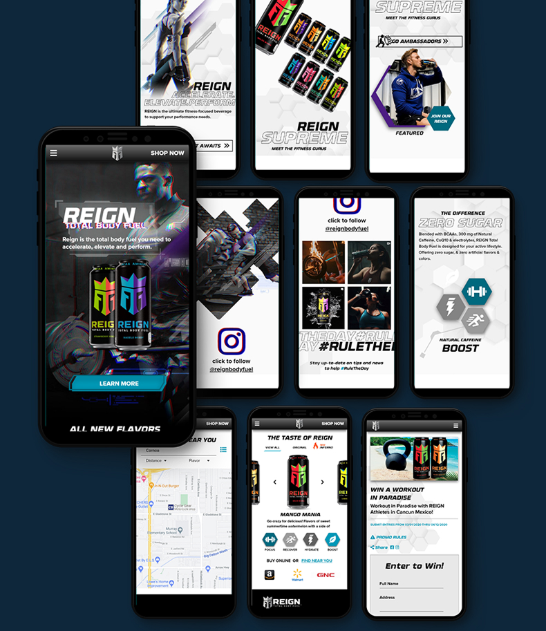
The full responsive system — landing, product, social, and promotion surfaces designed mobile-first.
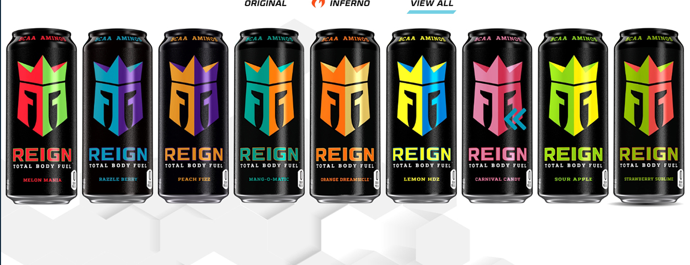
The Taste of Reign — the full flavor lineup unified under one bold visual identity.
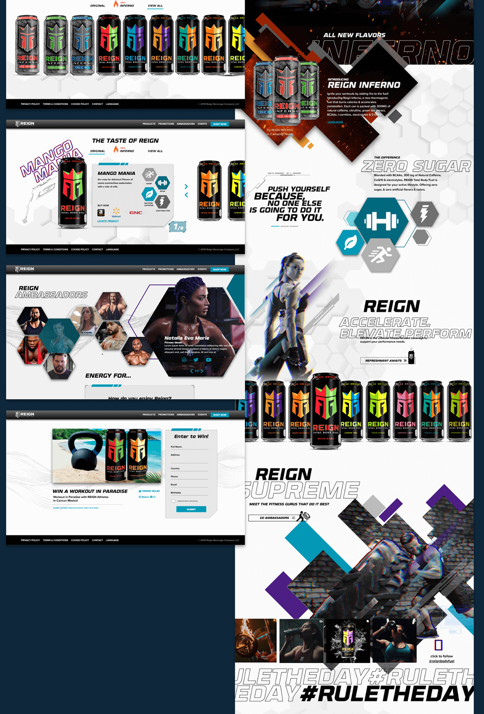
Desktop flagship pages — the Inferno launch, Zero Sugar story, ambassadors, and the #RULETHEDAY campaign.
Impact
Campaign Performance
4.8M
Launch Impressions
Across paid and organic channels in the first 30 days.
67%
E-Commerce Uplift
Direct-to-consumer sales increase following the rebrand.
22
Markets Launched
Simultaneous rollout across North America, EU, and APAC.
Retrospective
Project Challenges
This project required rapid alignment under tight timelines while building trust with a new marketing team, achieved through structured processes that enabled fast, confident decision-making.
Time Constraints
With a tight launch timeline and a new marketing team, we aligned quickly through a design sprint, validating ideas fast while building trust by involving them throughout the process.
Stakeholder Feedback
To avoid unproductive feedback loops, I structured reviews around clear, objective criteria, leading to smoother approvals and stronger trust in design moving forward.
Lessons Learned
Reflecting on the Reign Energy project provided critical insight into high-performance brand building in the digital age.
Design Leadership
This project reinforced the importance of adapting process to context — balancing speed and creativity while maintaining a strong UX foundation.
Cross-Functional Collaboration
Under tight timelines, alignment was critical. Clear communication and a collaborative approach kept marketing and development in sync, enabling a successful launch.
Next Project
Dell Technologies
Let’s Talk.
Bringing Enterprise Rigor & Brand Emotion.
Have a complex system that needs untangling? I’d love to hear about it. Reach out and let’s build something users can trust.